Part Context
Part: Part 4 - Architectural Patterns
Position: Chapter 17 of 60
Why this part exists: This section explains the structural patterns teams use to organize services, APIs, reads, writes, and event flows as systems and organizations grow.
This chapter builds toward: separate read-write modeling, projection thinking, and workload-specific optimization
Overview
CQRS, or Command Query Responsibility Segregation, separates the write side of a system from the read side when those two sides have meaningfully different needs. The command side focuses on correctness, validation, and durable state changes. The query side focuses on serving the exact shapes of data that clients need quickly and efficiently.
CQRS is useful when one model cannot cleanly satisfy both read and write requirements. It is not a default architecture. It is an optimization and clarity pattern for systems with strong read-write asymmetry.
Why This Matters in Real Systems
- Many systems are read-heavy and need denormalized views that are poor fits for the write model.
- CQRS makes it easier to optimize user-facing reads without compromising the integrity of the write path.
- It pairs naturally with event-driven systems and projection models.
- Interviewers use it to see whether candidates can reason about workload asymmetry and data modeling trade-offs.
Core Concepts
Command side
The write side enforces business rules and commits source-of-truth state changes.
Query side
The read side serves pre-shaped, denormalized, or aggregated views optimized for consumption.
Projections
Read models are often built by projecting commands or events into query-friendly stores.
Eventual consistency trade-off
The read side may lag behind the write side, so freshness expectations must be explicit.
Key Terminology
| Term | Definition |
|---|---|
| Command | A request intended to change system state. |
| Query | A request that reads state without changing it. |
| Read Model | A data representation optimized for retrieval and presentation. |
| Write Model | The authoritative state model used to validate and persist changes. |
| Projection | A derived view built from commands, change streams, or events. |
| Materialized View | A stored query result or precomputed representation optimized for reads. |
| Denormalization | Structuring data for faster reads at the cost of write complexity or duplication. |
| Lag | The delay between source-of-truth updates and read-model updates. |
Detailed Explanation
One model rarely serves both sides perfectly
A write model optimized for correctness may be normalized, strict, and rich in business rules. A read model optimized for dashboards, feeds, or mobile screens may want aggregates, flattened relationships, and precomputed counts. CQRS recognizes that forcing one model to satisfy both often creates friction.
Read models are products
A query model should reflect what the client actually needs, not what the database happened to store first. That can mean precomputed dashboard metrics, feed entries, aggregated status summaries, or search-friendly documents.
The cost is duplication and lag
CQRS introduces extra storage, projection logic, and lag between the source of truth and the read model. The pattern is justified when read performance, query complexity, or isolation needs make those costs worthwhile.
CQRS does not require event sourcing
Event sourcing is one way to feed projections, but not the only way. Change data capture, explicit projection updates, or scheduled materialization can also support CQRS.
Decision framework
CQRS makes sense when reads and writes differ sharply in volume, shape, or scaling needs; when dashboards or feeds are expensive to compute on demand; or when one read model must serve many consumers efficiently. It is less useful when the system is small and the same model serves both sides adequately.
Diagram / Flow Representation
CQRS Split

Read Model Update Flow

Real-World Examples
- Analytics dashboards often use CQRS-like read models because aggregate queries are too expensive to compute directly from transactional writes every time.
- E-commerce order systems may expose different read models for customers, warehouse workers, and finance teams.
- Social feeds frequently rely on denormalized read stores while writes remain in a more normalized source of truth.
- Google-scale data products often separate serving indexes or views from the systems that originally captured writes.
Case Study
High-scale dashboards
A dashboard system is a strong CQRS case because the read side wants fast summaries and aggregates, while the write side wants clean durable event capture or transactional correctness.
Requirements
- High-frequency writes from operational systems must remain correct and durable.
- Dashboard reads should be fast even under heavy usage.
- Different dashboard views may need different precomputed aggregations.
- Slight lag may be acceptable if clearly bounded.
- Projection failures should be detectable and repairable.
Design Evolution
- A first version may query the transactional database directly.
- As dashboard usage and aggregation complexity grow, materialized views or projection stores are introduced.
- As more consumers arrive, multiple read models may appear for different analytical or operational views.
- As correctness and freshness needs sharpen, lag monitoring and replay tools become part of the architecture.
Scaling Challenges
- Expensive join-heavy dashboard queries can overload the transactional store.
- Projection lag can create confusion if freshness expectations are not explicit.
- Duplicate or out-of-order updates can corrupt read models without careful projection logic.
- Rebuilding large views can be operationally expensive if replay strategy is weak.
Final Architecture
- A write model optimized for correctness and transactional safety.
- Projection logic that transforms changes into query-friendly shapes.
- Dedicated read models for dashboards, summaries, or feed-like views.
- Lag observability and replay/rebuild tooling.
- Clear communication of freshness expectations to users and downstream systems.
Architect's Mindset
- Use CQRS only when the read-write asymmetry is real enough to justify extra complexity.
- Design read models around consumer needs, not around storage purity.
- Keep the write model authoritative and understandable.
- Measure and communicate projection lag explicitly.
- Treat projection rebuilds and data quality as production responsibilities, not edge cases.
Worked CQRS Example: E-Commerce Order Dashboard
Write Side (Command Model)
-- Normalized: optimized for correctness
CREATE TABLE orders (id UUID PK, customer_id UUID, status VARCHAR(20), created_at TIMESTAMP);
CREATE TABLE order_items (id UUID PK, order_id UUID FK, product_id UUID, quantity INT, unit_price DECIMAL);
CREATE TABLE payments (id UUID PK, order_id UUID FK, amount DECIMAL, status VARCHAR(20));Event Publication (via Outbox)
-- Same transaction as order write
INSERT INTO outbox (event_type, aggregate_id, payload) VALUES
('order.placed', 'ord-98765', '{"order_id":"ord-98765","items":[...],"total":149.99}');Read Side (Query Model)
-- Denormalized: optimized for dashboard (no joins)
CREATE TABLE order_dashboard_view (
order_id UUID PK, customer_name VARCHAR, item_count INT, total_amount DECIMAL,
status VARCHAR, payment_status VARCHAR, created_at TIMESTAMP, last_updated TIMESTAMP);
SELECT * FROM order_dashboard_view WHERE status='pending' AND created_at > NOW()-INTERVAL '24h';Projection Worker
def handle_order_placed(event):
customer = customer_service.get(event.payload["customer_id"])
db.upsert("order_dashboard_view", order_id=event.payload["order_id"],
customer_name=customer.name, item_count=len(event.payload["items"]),
total_amount=event.payload["total"], status="pending")
def handle_payment_completed(event):
db.update("order_dashboard_view", order_id=event.payload["order_id"],
payment_status="completed", status="confirmed")Read-Model Rebuild
1. Create new table (order_dashboard_view_v2)
2. New consumer group from offset "earliest"
3. Process all events → v2
4. Compare v2 vs v1 (sample 1000, verify)
5. Switch Query API to v2
6. Decommission v1
Rebuild time: 100M orders × 0.1ms/event ≈ 3 hoursCQRS vs Event Sourcing — When You Need Which
| Dimension | CQRS (no Event Sourcing) | CQRS + Event Sourcing |
|---|---|---|
| Write model | Standard database | Append-only event log |
| Source of truth | Current state in DB | Complete event history |
| Read model fed by | CDC, outbox, or direct projection | Replay events from log |
| Audit trail | Must be added separately | Built-in (events ARE audit) |
| State rebuild | Not possible from events | Replay to any point in time |
| Complexity | Moderate | High |
| Use when | Read-write asymmetry; dashboards | Financial ledgers; compliance; undo/redo |
Decision: Start with CQRS without event sourcing. Add event sourcing only if you need full history as source of truth.
Operational Complexity Warning
| Cost | What It Means |
|---|---|
| Two data stores | Separate backups, monitoring, capacity planning |
| Projection code | Must be correct, idempotent, and observable |
| Lag to communicate | Product/UX must design for "data may be N seconds stale" |
| Rebuild tooling | You WILL need to rebuild read models; without tooling, multi-day incident |
| Debugging | "Dashboard shows X but order is Y?" requires tracing through projection |
Read Freshness SLOs
| Consumer | Acceptable Lag | Why |
|---|---|---|
| Customer order status | < 5 seconds | User expects immediate visibility |
| Operations dashboard | < 30 seconds | Near-real-time ops visibility |
| Finance reconciliation | < 5 minutes | Batch-oriented |
| Search index | < 60 seconds | New products searchable quickly |
| BI dashboard | < 15 minutes | Historical analysis |
Read-After-Write Workarounds
| Approach | How | Trade-off |
|---|---|---|
| Read from write model | Route writing user's reads to write DB for N seconds | Increases write DB load |
| Optimistic UI | Client shows write result locally before server confirms | May show data that fails validation |
| Polling with version | Client polls with version token; returns when caught up | Adds polling latency |
| Write returns rich response | Write API includes enough data to display immediately | Couples write response to read shape |
Projection Lag — Operational Playbook
Monitoring
| Metric | Alert Threshold |
|---|---|
| Kafka consumer lag (offsets) | Growing for > 5 minutes |
| Event-to-projection latency | > SLO threshold (e.g., 30s) |
| Projection error rate | > 1% |
| Dead letter queue depth | > 0 |
Incident Response
Lag detected (SLO breached)
├─ Worker healthy? → NO: Restart; check OOM/crash loops
├─ Processing slowly? → Check slow DB writes, missing indexes, N+1
│ → Scale consumer fleet
├─ Source burst? → Expected (sale)? Wait. Unexpected? Investigate upstream
├─ Events failing (DLQ)? → Fix bug; replay failed events
└─ Read model corrupted? → Trigger full rebuildCross-References
| Topic | Chapter |
|---|---|
| Event-driven architecture | Ch 16 |
| Outbox pattern | Ch 5, Ch 8 |
| Staleness SLOs and replica lag | Ch 11: Consistency |
| Async pipeline observability | F10: Observability |
Common Mistakes
- Applying CQRS to small systems that do not need it.
- Assuming event sourcing is mandatory for CQRS.
- Ignoring the cost of projection lag and read-model repair.
- Letting business logic leak into read-model projection code in ad hoc ways.
- Creating read models without clearly defined consumers or query patterns.
Interview Angle
- CQRS is often asked as a follow-up when a system is read-heavy or when dashboards and feeds are part of the design.
- Strong answers explain why one model is not enough, how the read side is built, and what freshness trade-off exists.
- Candidates stand out when they mention projections, denormalization, and eventual consistency clearly.
- A weak answer uses CQRS as a buzzword without identifying the asymmetry it solves.
Quick Recap
- CQRS separates the write model from the read model when their needs diverge significantly.
- The write side optimizes for correctness; the read side optimizes for retrieval shape and speed.
- Projections and materialized views are common supporting techniques.
- The trade-off is added complexity and possible lag.
- CQRS is powerful when justified, but unnecessary when one simple model is enough.
Practice Questions
- What problem does CQRS solve that a single data model struggles with?
- When is CQRS not worth it?
- How do read models become stale?
- Why are dashboards a natural CQRS use case?
- How does CQRS relate to event-driven architecture?
- Can CQRS exist without event sourcing?
- What observability do you need for projections?
- How would you rebuild a corrupted read model?
- Why can denormalization be a feature instead of a flaw on the read side?
- How would you explain CQRS to a product stakeholder who only cares that the dashboard is fast?
Further Exploration
- Connect this chapter with observability and event-driven systems later in the book.
- Study change data capture, materialized views, and projection rebuild patterns.
- Practice identifying read-write asymmetry in familiar products such as feeds, dashboards, and admin consoles.
Navigation
- Previous: Event-Driven Architecture
- Next: E-Commerce & Marketplaces